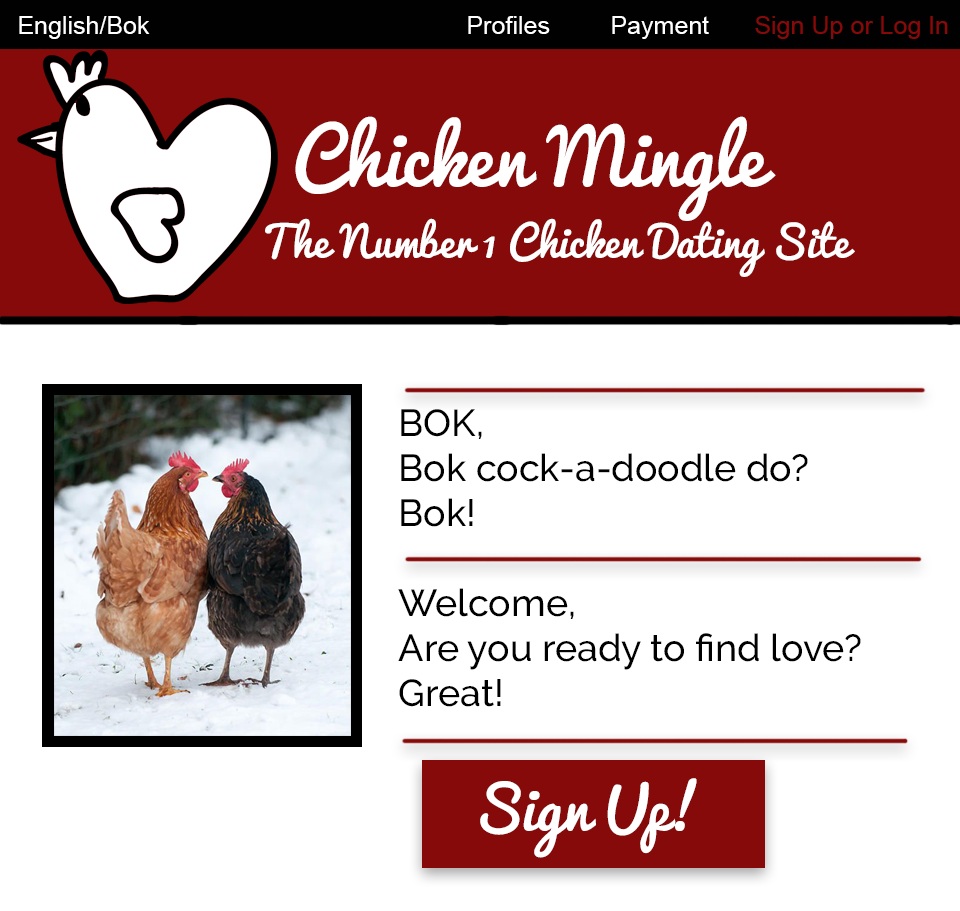

Collabrative Feedback
Presentation Feedback
1. One presenter was standing behind the computer screen and I couldn't see her or
hear her very well. She could have stood infront of the screen instead so there wasnt a
barier between her and the class or we could have read her lips.
2. The powerpoint was effective for me because it was laced with jokes! The Keith joke
absolutely killed me
3. I like the activities you guys chose to do. I think if you made us all do computer based work
then the message wouldn't have been as clear. It was fun playing the game where we got roles and
we criticized our partner.
New and Improved Website Layout

1. The colour scheme of the website wasn't working for the type of market CHicken Mingle
wanted to get into. I thought that making red the star colour of the site would be the smartest
choice becuase red represents love.
2. The website was great because all the information that users need to see were on the site such
as buttons suggesting users to sign up. I thought the information was too scattered so I put
it all on one navigation bar.
3. The content of the site was cute and effective, there was just a small alignment problem. I
just aligned all the photos and text on the website to make it look neater.